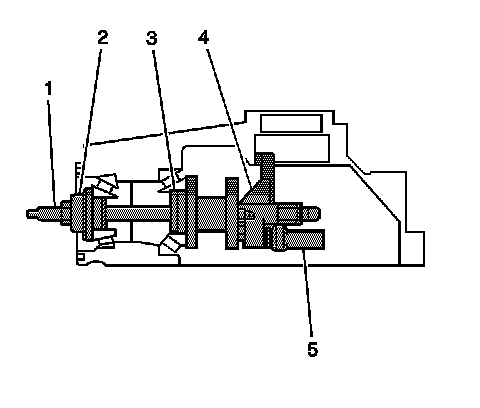
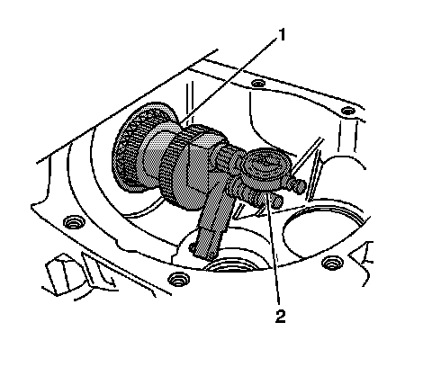
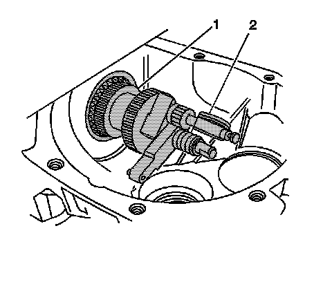
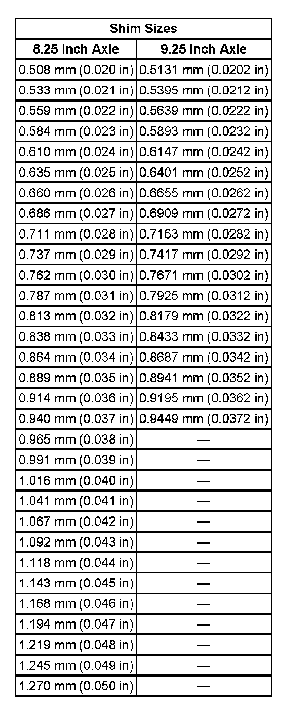

Pinion Depth Adjustment
Pinion Depth Adjustment
Tools Required
^ J 36601 Pinion Shim Selector
^ J 29763 Static Timing Gage
1. Install the pinion bearing cups into the differential carrier assembly.
Important: Make sure all of the tools, the pinion bearings, and the pinion bearing cups are clean before proceeding.
2. Before assembly, lubricate the pinion bearings with axle lubricant. Use the correct fluid. Refer to Sealers, Adhesives, and Lubricants.

Important: The J 36601 uses two different measuring arms to measure the pinion depth. The J 36601-4 is used to measure the pinion depth for the 8.25 inch axle and the J 36601-3 is used to measure the pinion depth for the 9.25 inch axle.
3. Install the J 36601-4 or the J 36601-3 (4) to the J 36601-7 (1).
4. Install the J 21777-35 for the 8.25 inch axle or the J 21777-8 for the 9.25 inch axle (3) to the J 36601-7 (1).
5. Install the inner pinion bearing into the differential carrier case half.
6. Insert the J 36601-7 (1) with the J 21777-35 or the J 21777-8 (3) through the inner pinion bearing and the differential carrier case half.
7. Install the outer pinion bearing.
Important: Each end of the J 36601-5 is sized specifically for the 8.25 inch or the 9.25 inch outer pinion bearing. Ensure the correct end is being used when installing the J 36601-5 into the outer pinion bearing.
8. While holding the outer pinion bearing in position, install the J 36601-5 (2), the washer, and the nut to the J 36601-7 (1).
Notice: Refer to Fastener Notice.
9. While holding the J 36601-7 (1) stationary with a wrench, tighten the nut on the J 36601-7 (1).
Tighten the nut until all of the end play is removed from the J 36601.
10. Rotate the assembly several times in both directions in order to seat the pinion bearings.
11. While holding the J 36601-4 or the J 36601-3 (4) stationary, measure the rotating torque of the J 36601 using an inch-pound torque wrench.
The rotating torque of the J 36601 should be between 1.1-2.3 Nm (10-20 lb in).
12. If the torque is less than 1.0 Nm (10 lb in), continue to tighten the nut on the J 36601-7 until a rotating torque of 1.1-2.3 Nm (10-20 lb in) is obtained.

13. Install the adjustment screw and the lock nut of the J 29763 (2) to the J 36601-4 or the J 36601-3.
14. Install the J 29763 to the adjustment screw and lock nut assembly.
Tighten the lock nut to hold the J 29763 in place.
Important: The left side differential bearing adjuster assembly on the 9.25 inch axle must be removed prior to placing the J 36601-3 in the differential side bearing bore.
15. Place the contact pad of the J 36601-4 or to the J 36601-3 into the differential side bearing bore.
16. Adjust the J 29763 to the differential bearing bore by doing the following:
1. Loosen the lock nut on the J 29763.
2. Place the contact pad of the J 36601-4 or the J 36601-3 onto the differential side bearing bore.
3. With the contact pad of the J 36601-4 or the J 36601-3 touching the differential side bearing bore, push down on the J 29763 until the needle of the J 29763 has turned 3/4 of a turn clockwise.
4. Tighten the lock nut of the J 29763.
17. Rotate the J 36601-4 or the J 36601-3 (1) back and forth until the needle of the J 29763 (2) indicates the lowest point in the differential side bearing bore.
18. At the lowest point of deflection, move the housing of the J 29763 until the needle indicates ZERO.
19. Move the J 36601-4 or the J 36601-3 back and forth again to verify the zero setting. Adjust the housing of the J 29763 as necessary to set the needle to ZERO.

20. After the ZERO setting is obtained and verified, grasp the J 36601-4 or the J 36601-3 (1) by the flats and move the J 36601-4 or the J 36601-3 out of the differential side bearing bore.
Important: The unit of measurement for the J 29763 is in hundredths of a millimeter.
21. The value indicated on the J 29763 (2) is the thickness of the shim needed in order to set the depth of the pinion.
22. Select the shim that indicates the correct thickness. Measure the shim with a micrometer in order to verify that the thickness is correct.
23. Remove the pinion depth setting tools.
24. Remove the pinion bearings.
25. Install the pinion shim between the drive pinion and the inner pinion bearing and assemble the differential carrier.
Differential pinion gear shims are available in the following sizes:
